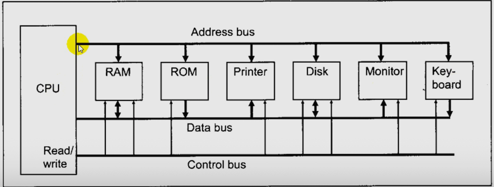

| Num | Quotient | Remainder | Note |
|---|---|---|---|
| 25/2 | 12 | 1 | LSB (Least Significant Bit) |
| 12/2 | 6 | 0 | |
| 6/2 | 3 | 0 | |
| 3/2 | 1 | 1 | |
| 1/2 | 0 | 1 | MSB (Most Significant Bit) |
Therefore : 2510 = 110012
Another Sol :
Convert 3910 to binary
32 + 0 + 0 + 4 + 2 + 1 = 39
Therefore : 3910 = 1001112
| Weight : | 24 | 23 | 22 | 21 | 20 | |
|---|---|---|---|---|---|---|
| Digits : | 1 | 1 | 0 | 0 | 1 | |
| Sum : | 16 | 8 | 0 | 0 | 1 | = 2510 |
Base 16
| Decimal | Binary | Hex |
|---|---|---|
| 0 | 0000 | 0 |
| 1 | 0001 | 1 |
| 2 | 0010 | 2 |
| 3 | 0011 | 3 |
| 4 | 0100 | 4 |
| 5 | 0101 | 5 |
| 6 | 0110 | 6 |
| 7 | 0111 | 7 |
| 8 | 1000 | 8 |
| 9 | 1001 | 9 |
| 10 | 1010 | A |
| 11 | 1011 | B |
| 12 | 1100 | C |
| 13 | 1101 | D |
| 14 | 1110 | E |
| 15 | 1111 | F |
Examples
| Binary | 1001 | 1111 | 0101 |
|---|---|---|---|
| HEX | 9 | F | 5 |
| HEX | 2 | 9 | B |
|---|---|---|---|
| Binary | 0010 | 1001 | 1011 |
| 32 | 16 | 8 | 4 | 2 | 1 | |
| 1 | 0 | 1 | 1 | 0 | 1 | 32+8+4+1=45 |
=> 4510 = 0010 1101 2 = 2D16
| Decimal | 512 | 256 | 128 | 64 | 32 | 16 | 8 | 4 | 2 | 1 |
|---|---|---|---|---|---|---|---|---|---|---|
| Binary | 1 | 0 | 0 | 1 | 1 | 1 | 0 | 1 | 0 | 1 |
=> 62910 = 512+64+32+16+4+1 = 0010 0111 01012 = 27516
| Decimal | 1024 | 512 | 256 | 128 | 64 | 32 | 16 | 8 | 4 | 2 | 1 |
|---|---|---|---|---|---|---|---|---|---|---|---|
| Binary | 1 | 1 | 0 | 1 | 0 | 1 | 1 | 0 | 0 | 1 | 0 |
=> 1024+512+128+32+16+2 = 171410
Perform HEX addition : 23D916 + 94BE16
23D9 LSD : 9 + 14(E) = 23 23 - 16 = 7 w/carry + 94BE 1 + 13(D) + 11(B) = 25 25 - 16 = 9 w/carry ---- 1 + 3 + 4 = 8 B897 MSD : 2 + 9 = B
Perform HEX substraction : 59F - 2B8
59F LSD : 15 - 8 = 7 - 2B8 9 + 16 - 11 = 14 = E16 --- 5 - 1 - 2 = 2 2E7
Inside a Computer

We have control bus too which I didn't include in the represantation
CPU (Central Processing Unit)
The “brain” of the computer. It performs all the calculations, logical operations, and controls the flow of data between memory and peripherals. Made up of the ALU (Arithmetic Logic Unit), Control Unit, and Registers.
Memory (RAM & ROM)
RAM (Random Access Memory) : Temporary storage used while the computer is running.
ROM (Read Only Memory) : Permanent storage that holds instructions for startup and basic functions. The CPU reads and writes data here while processing.
Peripherals
External or internal devices connected to the computer system. Examples: Monitor, Printer, Keyboard, Mouse, Storage Devices, etc. Used for input, output, and storage operations.
Address Bus
Carries the address (location) of where data should be read from or written to. It flows one way — from CPU to Memory or Peripherals.
Data Bus (8 (Old Computers) - 64 (Newer Computers)
Carries the actual data between the CPU, Memory, and Peripherals. It’s bi-directional — data can move both to and from the CPU.
Internal organization of a computer

Internal Block Diagram of a CPU
CISC vs. RISC
CISC
Complex Instruction Set Computer (CISC) : Older, Used before 1980.
- Many different instructions with many different formats
- But, only small subset encountered with Linux Programming
RISC
Reduced Instruction Set Computers (RISC) : Although the philosophy of RISC was discussed back in the 70's The Chip itself wasn't made untl 1980 , By Intel !
80x86 Microprocessor
Intel 8086 (1978)
- 1 MB addressable RAM
- 16-bit registers
- 16-bit data bus
Intel 8088 (1979)
- 1 MB addressable RAM
- 16-bit registers
- 8-bit bus data
Intel 80286 (1982)
- 16 MB addressable RAM
- protected memory
- introduced IDE bus architecture
- Up tp 20MHz (Some books says 16MHz)
Intel 386 (1985)
- 4 GB addressable RAM
- 32-bit registers
- paging (virtual memory)
- Up to 33MHz
Intel 486 (1989)
- instruction pipelining
- 8k cache
Pentium (1982)
Pentium Pro (1995)
Pentium II (1997)
Pentium III (1999)
Pentium 4 (2000)
Pentium D (2005, Dual Core)
and the rest is history ; if you are interested in capabilities of these CPUs you can find more on Wikipedia.
Inside 8086

The 8086 CPU is split into two cooperating units:
Execution Unit (EU) — decodes and executes instructions, contains registers, the ALU, flags and operand buffers.
Bus Interface Unit (BIU) — handles all external memory and I/O bus activity, generates physical addresses (segment:offset),
and prefetches instructions into the instruction queue.
This split allows a simple form of pipelining: while the EU executes an instruction, the BIU can fetch the next instruction bytes from memory.
Execution Unit
General-purpose registers (shown: AH/AL, BH/BL, CH/CL, DH/DL) :
Each of AX, BX, CX, DX is a 16-bit register that can also be accessed as two 8-bit halves:
AX = AH (high byte) : AL (low byte)
BX = BH : BL, etc.
Typical roles:
AX often used implicitly by many instructions (e.g., MUL, DIV, IN, OUT).
BX often used as a base register for memory addressing.
CX commonly used as a counter for string/loop/shift instructions (e.g., LOOP, REP).
DX used for I/O port addresses or high-half of multiplication/division results.
Width: each full register is 16 bits; AH/AL are 8 bits.
Other 16-bit registers (BP, DI, SI, SP) — purpose & use :
BP (Base Pointer): normally used to access stack-based variables (with SS segment). Example: MOV AX, [BP+4] accesses a function parameter.
SI (Source Index) and DI (Destination Index): used for string and block operations (e.g., MOVS, CMPS). They can be used with DS or ES segments depending on the instruction.
SP (Stack Pointer) — highlighted in the image: points to the top of the stack (offset within the SS segment). It changes with PUSH, POP, CALL, RET. SP is internal to the EU for stack operations; actual memory access still goes through the BIU.
Operands :
This box represents the operand fetch/decode and temporary buffering inside the EU.
The EU decodes the instruction bytes (provided by the BIU via the instruction queue), determines what operands it needs, fetches them from registers or requests memory data (if the operand is in memory).
The operands buffer holds the values that will be fed to the ALU. It enables the ALU to operate while BIU continues fetching the next instructions.
ALU (Arithmetic Logic Unit) :
Performs arithmetic (ADD, SUB, MUL, DIV), logical (AND, OR, XOR, NOT), and bit-shift/rotate operations.
16-bit ALU on the 8086 (also supports 8-bit ops using the low/high bytes).
Takes inputs from the operands buffer and produces results sent back to registers or memory.
Example: ADD AX, BX — ALU adds 16-bit contents of AX and BX and writes result to AX.
Flags :
The ALU updates the flag register (also called the status register) to reflect results. These flags affect conditional branches and string operations.
CF (Carry Flag) — set on unsigned overflow (bit 0).
PF (Parity Flag) — set if result has even parity.
AF (Auxiliary Carry) — used for BCD arithmetic (half-carry).
ZF (Zero Flag) — set if result is zero.
SF (Sign Flag) — reflects the MSB of the result (negative if set for signed numbers).
TF (Trap Flag) — single-step debugging.
IF (Interrupt Flag) — enables/disables maskable interrupts.
DF (Direction Flag) — controls string operation direction (increment/decrement SI/DI).
OF (Overflow Flag) — set on signed overflow.
Bus Interface Unit
Segment registers (stack of boxes: CS, ES, SS, DS, IP shown)
8086 uses segment registers to build 20-bit physical addresses from 16-bit segment + 16-bit offset:
Common segment registers: CS (Code Segment), DS (Data Segment), SS (Stack Segment), ES (Extra Segment).
IP (Instruction Pointer): holds the offset of the next instruction within the code segment (CS:IP forms the logical pointer to code).
Physical address is computed as: physical = (segment << 4) + offset (i.e., segment * 16 + offset).
Example: CS = 0x1234, IP = 0x0010 → physical address = 0x12340 + 0x0010 = 0x12350.
This block calculates physical addresses (using the segment register and offset registers like IP, SP, BP, SI, DI, or displacement values) and generates the necessary control signals for memory or I/O accesses.
Responsible for asserting read/write signals, memory/IO selection, address latch enable, etc.
Coordinates timing and bus cycles so data can be read from/written to memory or I/O devices.
Also called the prefetch queue or instruction queue. On the 8086 it holds up to 6 bytes of prefetched instruction code.
The BIU fetches bytes from memory and places them into this queue while the EU consumes them for decoding/execution.
This is the heart of the 8086’s simple pipeline: the BIU is fetching future instruction bytes while the EU executes the current instruction, improving throughput.
When the EU executes a control transfer (jump, call, return, interrupt) that changes CS:IP, the prefetch queue is flushed and refilled, because sequential fetch no longer applies.
The BIU actually drives the address bus, data bus, and control signals to the outside world (memory chips, I/O devices).
External buses include address lines A0–A19, data lines D0–D15, and control signals (RD, WR, M/IO, ALE, etc.) — these are simplified in the diagram as the external interface on the far right/left.
The BIU takes requests from the Address Generation block and performs the physical read/write operations to memory or I/O.
How things interact
Instruction fetch (BIU -> EU) :- BIU reads instruction bytes from memory (using CS:IP for code fetch) and pushes them into the instruction queue.
- Arrow from Instruction queue to the EU (thin blue arrow) supplies bytes to be decoded.
- EU pulls instruction bytes from the queue, decodes them, determines operand sources (register, memory).
- If operand resides in memory, EU issues a request to BIU (via the bus) to fetch the operand data; BIU returns data on the external bus.
- Operands are placed into the Operands buffer (green), fed to the ALU, and the operation executes.
- ALU outputs results and updates Flags; results are written back to registers or memory (again, memory writes go through the BIU).
- SP is updated in the EU when PUSH/POP or call/return occur. Actual memory writes/reads for stack access are done by the BIU using the SS:SP address computed in the Address generation block.
- While EU executes, BIU continues filling the queue (unless a flow change happens). This concurrency is what makes the EU and BIU separation beneficial.
Registers
AX = 0011000000111001
AH = 00110000
AL = 00111001
Registers of a piece
CS - Points at the segment containing the current Program.
DS - generally points at segment where variables are defined.
SS - points at the segment containing the stack.
ES - extra segment register, it's up to a coder to define its usage.
these 64KB segments are a continues part of memory that holds the address pointing to the specifed segment.
Memory Segmentation Concept
The Intel 8086 CPU uses segmented memory addressing to access its 1 MB (1,048,576 bytes) address space.
Each memory address is defined by two parts:
Segment : Stored in a segment register (CS, DS, SS, or ES)
Offset : Stored in an index or pointer register (BX, SI, DI, BP, or SP)
logical to Physical address Conversation
Segment : Offset
To calculate the physical address, the CPU performs this operation:
This effectively shifts the segment value left by 4 bits (i.e., multiplies by 16) and then adds the offset.
Physical Address = (Segment×16)+OffsetPhysical Address
DS = 1234 SI = 7890 1234:7890 Physical Address : 1234 * 10h + 7890 = 19BD0
DS = 1230 12300 SI = 0045 + 0045 ----- 12345 Physcial Address = 1234516
Flag Registers
Determines the current state of the program
| Flag Name | Bit Position | Purpose |
|---|---|---|
| Overflow (OF) | Bit 11 | Indicates arithmetic overflow |
| Direction (DF) | Bit 10 | Controls operations; 0 = increment , 1 = decrement |
| Interrupt | Bit 9 | Enables/Disables interupts; 1 = interupts enabled |
| Trace (TF) | Bit 8 | Enables single-step mode for debugging. |
| Sign (SF) | Bit 7 | Set if result of operation is negative (most significant bit = 1). |
| Zero (ZF) | Bit 6 | Set if result of operation is zero. |
| Auxiliary Carry (AF) | Bit 4 | Set if carry occurs between bit 3 and bit 4 (used in BCD arithmetic). |
| Parity (PF) | Bit 2 | Set if the number of 1 bits in the result is even. |
| Carry (CF) | Bit 0 | Set if there is a carry out or borrow into the most significant bit. |
Example
1001 1100 CF = 1
+ 0110 0100 PF = 1
--------- AF = 1
0000 0000 ZF = 1
SF = 1
FFFFh + SF = 1 FFFFh PF = 0 ----- ZF = 0 1 FFFEh CF = 1 1111 1111 1111 1110
32-bit Registers
EAX EBP EBX ESP ECX ESI EDX EDI EFLAGS EIP
pipelined vs. non-pipelined
Non-pipelined execution
- Each instruction is executed sequentially.
- The processor fetches an instruction from memory, then executes it completely before fetching the next instruction.
- The CPU is doing only one operation at a time.
- This means while instruction 1 is being executed, the CPU is idle in terms of fetching the next instruction.
- As a result, instruction throughput is lower.
Pipelined execution
- Fetch stage (done by the Bus Interface Unit)
- Execution stage (done by the Execution Unit)
- While instruction 1 is being executed, instruction 2 is being fetched simultaneously.
- This overlap of operations allows the CPU to begin executing a new instruction every cycle after the pipeline is full.
- The result is improved performance and higher instruction throughput.
Basic flow of instruction execution
This image illustrates the basic flow of instruction execution in a von Neumann–style CPU architecture, showing how instructions are fetched, decoded, and executed.
Components
- PC (Program Counter): Holds the address of the next instruction to fetch from memory.
- Memory: Stores both the program instructions and data operands.
- Instruction Register (IR): Temporarily holds the current instruction being executed.
- Registers: High-speed storage locations inside the CPU used for holding intermediate data and operands.
- ALU (Arithmetic Logic Unit): Performs arithmetic and logical operations.
- Flags: Store the status of the last ALU operation (e.g., zero, carry, sign, overflow).
Instruction Cycle
(a) Fetch
- The PC points to the next instruction.
- The instruction is fetched from memory into the Instruction Register (IR).
- The PC is then incremented to point to the next instruction.
(b) Decode
- The control unit decodes the instruction held in the IR.
- This step identifies what kind of operation it is (e.g., ADD, SUB, MOV) and what operands are needed (registers or memory).
(c) Execute
- The operands are read from registers or memory.
- They are passed to the ALU, which performs the required operation (addition, subtraction, etc.).
- The result is stored back into a register or memory.
- The status flags are updated based on the result.
Once the current instruction is executed, the CPU goes back to the fetch stage to get the next instruction